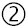
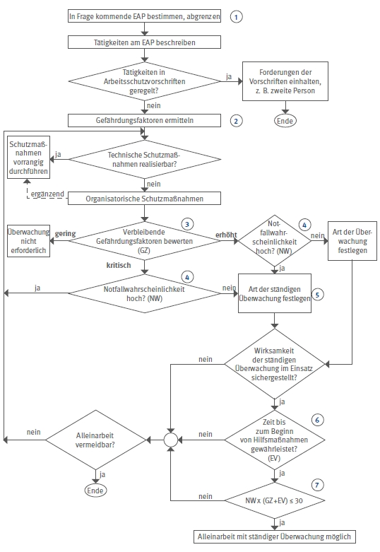

Die Ziffern im Ablaufdiagramm bedeuten im Einzelnen:
| Einzelarbeitsplatz außerhalb von Ruf- und Sichtweite zu anderen Personen. | |
 |
Gefährdungsfaktoren entsprechend Tabelle 1. |
Ermittlung der Gefährdungsziffer GZ nach Tabelle 2. |
|
Ermittlung der Notfallwahrscheinlichkeit NW nach Tabelle 3. |
|
Randbedingungen zur Auswahl beachten, z.B. Alarmart. |
|
Bewertung der Zeit, die bis zum Beginn der Hilfsmaßnahmen EV nach Tabelle 4 vergehen kann. |
|
Der Wert von maximal 30 bedeutet akzeptables Risiko. Damit ist Alleinarbeit mit ständiger Überwachung möglich. |
